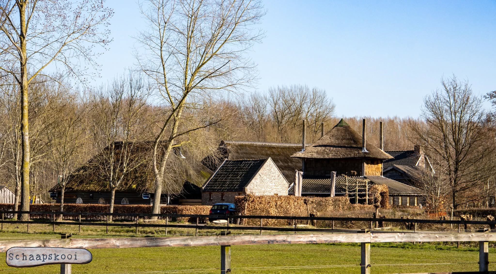
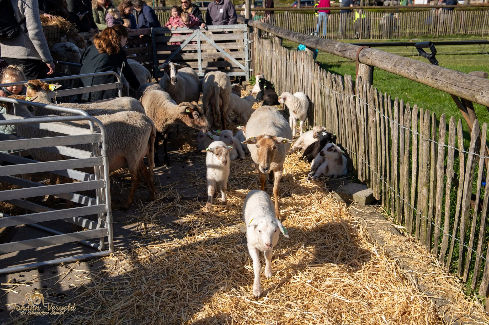
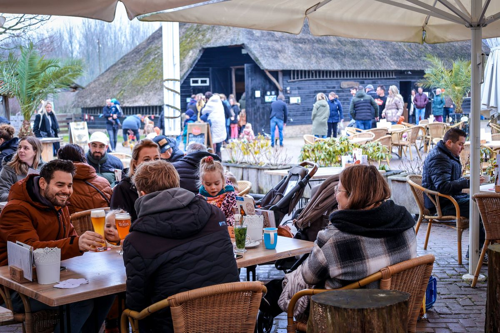

Index
Galerij
Info

De Schaapskooi in Schijndel.

Vooral in het lammetjesseizoen is het druk bij de Schaapskooi.

Een bezoek kan afgesloten worden met een hapje of drankje bij café 't Skupke.
Sluit uw ogen en ervaar hoe het is om rond te lopen op de Schaapskooi.